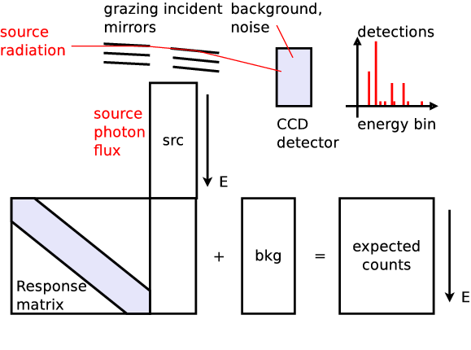
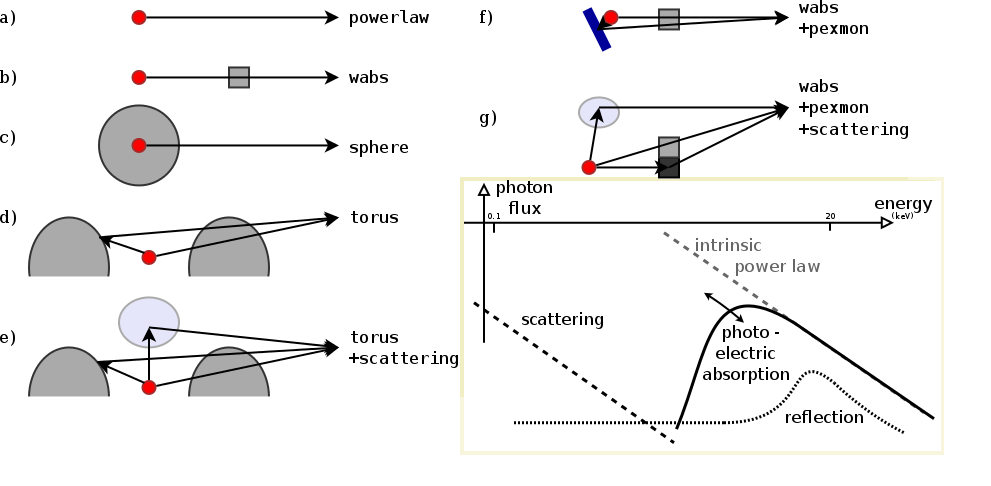
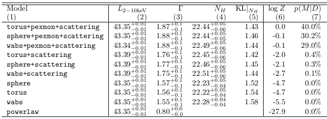
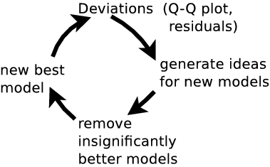

Probing the AGN geometry
with Bayesian techniques
Santiago de Chile, May 2015
Johannes Buchner (MPE$\rightarrow$PUC)
in collaboration with A. Georgakakis, K. Nandra, L. Hsu, C. Rangel, M. Brightman, A. Merloni and M. Salvato
Buchner et al. 2014 - arxiv:1402.0004
About me, Johannes Buchner
- Studied Astronomy & Computer Science in Vienna
- developed MCMC software for stellar pulsation analysis
- Master: Computer Science / Machine Learning in NZ, at a Radio Astronomy institute
- developed PyMultiNest -- Python nested sampling package
- Doctorate: Astronomy @ Max Planck institute for extr.Physics
- Bayesian X-ray spectral analysis with Bayesian model comparison of physically motivated models (today)
- Population analysis of Active Galaxies (MCMC/Stan)
- published a nested sampling paper in Statistics&Computing (Springer)
Astronomical problem
- Black holes in the centers of all massive galaxies
- matter falls in, spirals, heats, creates radiation. drawing
- $E = M \cdot c^2$
- luminosity $\rightarrow$ mass inflow
Observables
X-ray telescopes produce spectra via Poisson process. $$\cal{L}=\prod_i \lambda_i^{k_i} \cdot \exp\{-\lambda_i\}/k_i!$$
Example - Source 179 z=0.605, 2485 counts
powerlaw

Spectral models
Bayesian inference
$$ p(A|B) p(B) = p(B|A) p(A) $$$$ p(\theta|D,M) = {p(\theta|M)p(D|\theta,M)\over p(D|\theta,M)} $$ parameter posterior probability distributions. assume $\int p(\theta|D,M)d\theta = 1 \rightarrow \int p(\theta|M)p(D|\theta,M)=p(D|\theta,M)=Z $ closed world assumption within defined parameter space of model M.
$$p(M|D)={p(M)p(D|M)\over p(D)}$$ assume $\sum p(M|D)=1 \rightarrow p(D)=\sum p(D|M)p(M)$ closed world assumption among models.
Bayesian inference
Nice properties:- can distinguish between physical effects (models) and constrain physical parameters consistently
- models with large predictive diversity are punished
- (Py)MultiNest makes it easy to compute Z and posterior distribution for up to 40 parameters, for arbitrary models
- now becoming more common practice in Exoplanet searches, Cosmology, etc.
Parameters: of torus+scattering

- Normalisation ~ luminosity
- Column density $N_H={10}^{20-26}\text{cm}^{-2}$
- Soft scattering normalisation: $f_{scat} < 10\%$
- Photon index: $\Gamma$
- Redshift
Parameters: of torus+scattering
- Uniform: log Normalisation ~ log Luminosity
- Uniform: Column density $\log N_H/\text{cm}^{-2} = {20-26}$
- Uniform: Soft scattering normalisation: $\log f_{scat}={10}^{-10 ... -1}$
- Photon index: informed, from nearby objects, $\Gamma \sim 1.95 \pm 0.15$ (Nandra&Pounds 1994)
- Redshift: informed probability distribution, from other observations.
unobscured powerlaw
absorbed with tiny blob in the LOS

torus+scattering

torus+pexmon+scattering

wabs+pexmon+scattering

Model comparison results

Physically motivated models
Models to compare
Model comparison results
Model comparison
- Can distinguish some models, others are equally probable
- Have made use of
- local AGN information $\leftrightarrow$ $\Gamma$
- other $\lambda$ information $\leftrightarrow$ $z$
- Have derived parameter distributions and $Z$ simultaneously
- incorporating uncertainty in $\Gamma$, $z$
- Can tell that it does not know
How can geometries be distinguished?
- How to increase strength of data?
- Combine many objects
- Traditionally: stacking
- lose information in averaging
- averaging of different redshifts?
- Here, multiply Z to combine information $$Z_1 = \prod_\mu Z_1^\mu$$
Results for the full CDFS sample

Conclusions
- Possible geometries:
- Absorbed powerlaw necessary
- Soft scattering powerlaw detected
- Additional Compton-reflection detected
- Torus model preferred (also in CT AGN)
- first use of nested sampling for model comparison & parameter estimation in X-ray astronomy
- Buchner et al. 2014 - arxiv:1402.0004
- coming next: population analysis of the $L$, $N_H$ distribution of Active Galactic Nuclei with non-parametric Bayesian analysis.
Nested Sampling
 draw randomly uniformly 200 points
draw randomly uniformly 200 points
always remove least likely point, replace with a new draw of higher likelihood
 converges to maximum likelihood, stops when flat
converges to maximum likelihood, stops when flat
 how to draw new points efficiently?
how to draw new points efficiently?
MultiNest does it via clustering and ellipses
Nested Sampling with MultiNest
explores the problem in
- high dimensions (3-20)
- handles multiple maxima
- handles peculiar shapes
- runs efficiently to convergence
(typically 10000-40000 points)
measures and describes shapes (like MCMC)
model inadequacy
Have cool tools now, but:- Is the model right?
- Where is the model wrong?
- Systematic effects?
- Discover new physics beyond the model
Common route: residuals
New idea: Q-Q plot (no binning)
good fit if straight line
Q-Q plot primer


Generate ideas for new models
Summary
-
(see 5.1, Appendix 3)Parameter estimation:
explore multiple maxima
general solution with nested sampling
-
Model comparison:
Likelihood ratio is less effective than Z ratios(see 5.2, Appendix 2)
computed by nested sampling; has right interpretation -
(see 5.3, Appendix 1)Model discovery:
Q-Q plots + model comparison
Likelihood ratio tests / F-test
-
 only if special case
only if special case
- not at borders (feature detection)
- only if $n\rightarrow\infty$
- do not compute it, interpretation is wrong; critisize papers mis-interpreting the statistic
Pragmatic viewpoint
distinguish two models via data can use any statistic
does not have to be probabilistic
- can be counts in the 6keV bin
- determine discriminating threshold via simulations
- false association rate ($B\rightarrow A$, $A\rightarrow B$)
- correct association rate ($A\rightarrow A$, $B\rightarrow B$)
Comparison $\hat{L}$ vs. $Z$
 red: falsely choose powerlaw, for wabs input
red: falsely choose powerlaw, for wabs input
red: falsely choose wabs, for powerlaw input
$Z$ more effective than $\hat{L}$
Bayesian evidence $$ {P(A|D)\over P(B|D)} = {P(A)\over P(B)} \times {Z_A\over Z_B} $$
interpretation of Z-ratio under flat priors:
- prob. that this model is the right one, rather than the other.
- A, B or equal
Connecting
Need to connect C-stat calculation with algorithmBXA: Bayesian X-ray Analysis
- MultiNest for Sherpa / (Py)Xspec
- installed on ds42 under
/utils/bxa
- documentation: github.com/JohannesBuchner/BXA
Analysis
Likelihood value evaluated "everywhere"
 ML analysis: find confidence intervals
ML analysis: find confidence intervals
- defined via: how often the estimator (maximum) gives the right answer
- different for different estimators - property of the method
- credible intervals
- defined via: prob. that the true value is inside this range rather than outside is x%.
results coincide for some choice of prior (usually "flat").
How?
posterior "chain" from MCMC/nested sampling: representation through point density
| norm | $N_H$ | $z$ |
|---|---|---|
| -4.1 | 22.4 | 2.3 |
| -4.3 | 22.45 | 2.4 |
| -4.3 | 22.38 | 2.5 |
| ... | ... |
just make histogram of 1/2 columns
contains all correlations
Error propagation: example
| norm | $N_H$ | $z$ |
|---|---|---|
| -4.1 | 22.4 | 2.3 |
| -4.3 | 22.45 | 2.4 |
| -4.3 | 22.38 | 2.5 |
| ... | ... |
(norm, $N_H$, $z$, ...), set the model
- set $N_H$ = 0
- compute intrinsic flux
- compute luminosity
using $z$ and flux
incorporates uncertainty in $z$ and the parameters!
- just do your calculation with every value instead of one
model inadequacy
Have cool tools now, but:- Is the model right?
- Where is the model wrong?
- Systematic effects?
- Discover new physics beyond the model
Common route: residuals
New idea: Q-Q plot (no binning)
good fit if straight line
Q-Q plot primer
Generate ideas for new models
Summary
-
(see 5.1, Appendix 3)Parameter estimation:
explore multiple maxima
general solution with nested sampling
-
Model comparison:
Likelihood ratio is less effective than Z ratios(see 5.2, Appendix 2)
computed by nested sampling; has right interpretation -
(see 5.3, Appendix 1)Model discovery:
Q-Q plots + model comparison
Pragmatic viewpoint
distinguish two models via data can use any statistic
does not have to be probabilistic
- can be counts in the 6keV bin
- determine discriminating threshold via simulations
- false association rate ($B\rightarrow A$, $A\rightarrow B$)
- correct association rate ($A\rightarrow A$, $B\rightarrow B$)
Comparison $\hat{L}$ vs. $Z$
red: falsely choose powerlaw, for wabs input
red: falsely choose wabs, for powerlaw input
$Z$ more effective than $\hat{L}$
Bayesian evidence $$ {P(A|D)\over P(B|D)} = {P(A)\over P(B)} \times {Z_A\over Z_B} $$
interpretation of Z-ratio under flat priors:
- prob. that this model is the right one, rather than the other.
- A, B or equal